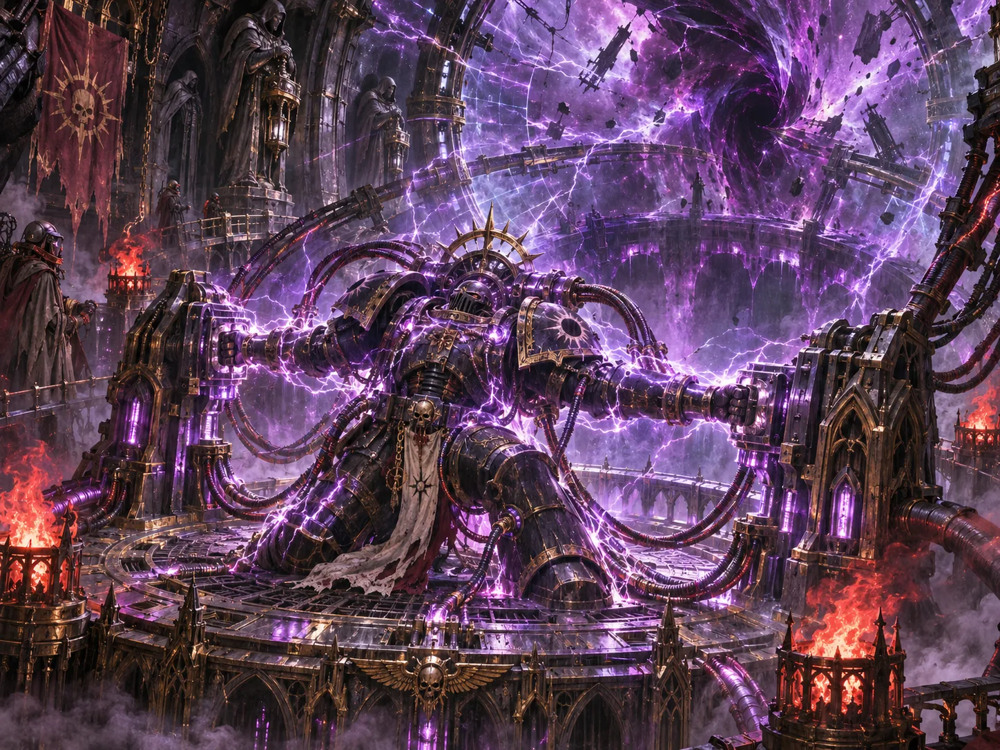

V3.7 原文档案 · 按原稿顺序完整收录 · 未删节
V3.7 原文档案 · 按原稿顺序完整收录 · 未删节
六、万年守秘的关键时刻
〔第八环区，未登记的墙刻〕
“我没有看见他们死去。我只看见门关上。”
第一刻：迟到的命令（021.M31）
署名狮王的加密令状所标记的发信时刻位于大远征末期，随后在亚空间中漂流数十年，于二次建军窗口期抵达巨石。至高大导师以一支连队为核心组建独立战团，配给遗物，派往朦胧星域边缘。一个世纪后，舰队抵达废星。初代院长奥兰多·灰烬之眼在井口旁刻下守望铭文。他不知道这口井里有什么。他只握着那道署有狮王之名、却无人亲见发出的令状。
第二刻：倾听，而非消灭（444.M32）
塞缪尔——第一个被隐修会单独回收的堕天使。
他在审讯中给出两份简短证词：其一，卡利班毁灭时轨道上存在身份不明的观察者，观看了整个毁灭过程，未参战，也未救援任何一方。其二，从亚空间另一侧对希芙拉井底的短暂感知——井底有东西在对他的存在做出反应：“它认得我……但我们还没去过那里。”
他在第三十一天死去。依其生前请求，遗体被静滞封存，作为物证。证词列为机密，尘封于地库最深处。
第三十一日的问答：临终前，塞缪尔被问过是否愿意让隐修会将证词交给主战团。他答应交出写下来的部分，却不准他们替他补完“我们”一词。他并未声称自己无罪；他要求的只有两件事——不要把他记成先知，不要把他尚未说完的话记成谎言。隐修会接受了后一个要求，却没有完成前一个要求。此后千年间，他们不断试图从这份证词中求得答案，恰好使它变成了某种预言。
——“我们”从未被正式解读。
第三刻：大裂变（567.M34）
深渊井口在三小时内毫无预兆地扩张了三十三倍，任何接触之物从分子级解体。逾三百名阵亡者中，部分人员识别信号在事后数年于裂隙方向被短暂截获，未获确认。
第七任院长加勒隆·虚空行者以自身为熔丝压回阈值，血肉剥离，遗体未寻。裂缝始终未愈合，扩张速率降至不可察觉但未停止。井底首次传出清晰的计数声。此后数千年持续不断。薪传议会将其命名为“深渊之数”。
例行通讯中断。巡逻范围收缩。帝国档案将隐修会列为“全员推定阵亡”。希芙拉没有提出异议。
大裂变后，下层河床露出一段无铭阶墙。旧渠人封了三条水道，守军在图上把它们涂黑。
同年，帝国航图出现厄声裂隙。发往该方向的呼号从未收到回讯。
〔井口监听簿〕
骑士阵亡时，深渊之数偶有跳动。向前一次。向后一次。第三次的刻度被刮掉。
银河大裂隙与失联航路（999.M41）
〔余烬号·不屈纪元初年的归航表〕
999.M41，银河大裂隙撕开帝国航路。盲星号的返航钟比计划晚了四个月；一艘载着药剂与更替零件的货船始终没有抵达。舰长把旧图上的航道划去，又将能够避开巡检站的暗线圈出。薪传议会一度收到重新归入帝国指挥链的提议，没有签收。
那场遍及银河的灾变，在舰志中称为银河大裂隙。567.M34发生在希芙拉井口的大裂变，仍记在另一册。两份卷宗分放在不同的柜中。
第四刻：隐匿的基石（M42）
〔伊瑟林私人笔记，未签名〕
我们守了这么久。
他们说那是为了等他回来。
我不知道“回来”指的是谁。
第五刻：塞佛领主（M42，仅限薪传议会）
〔塞佛领主·无署名边注〕
一名背负重物的行者曾在外部战报中出现。相位比对页被封死。
若他来到井口，谁会先认出谁？